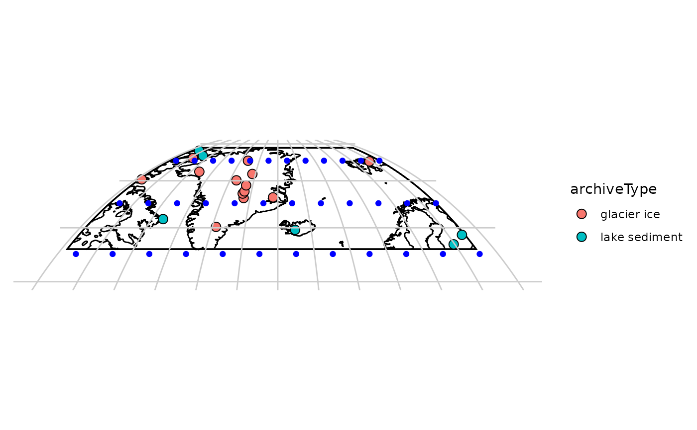
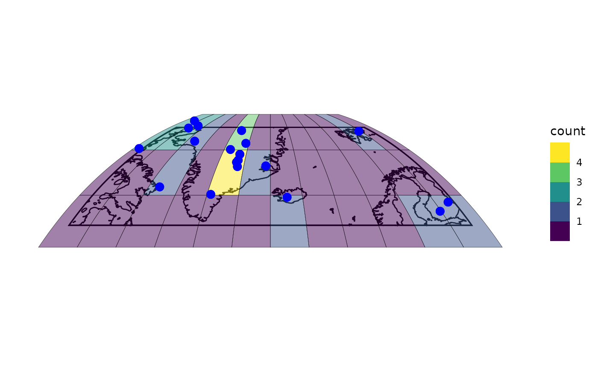
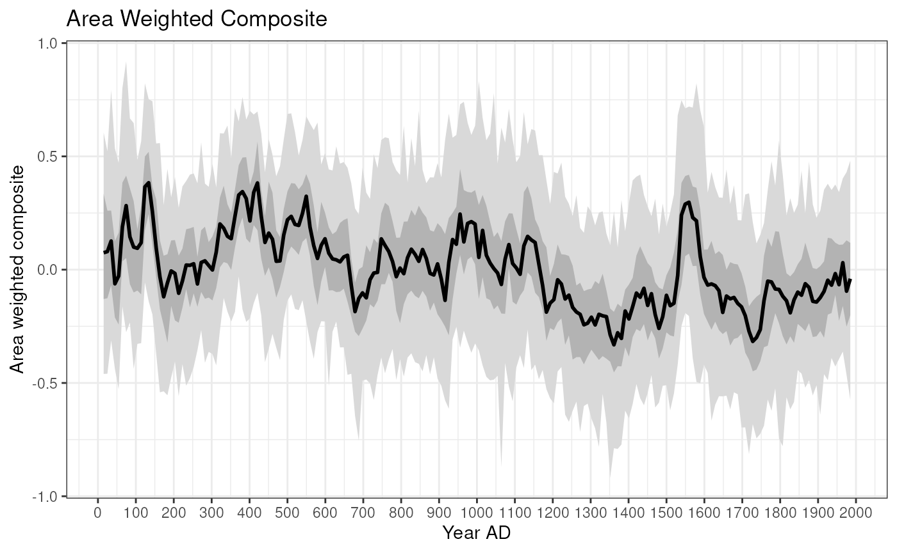
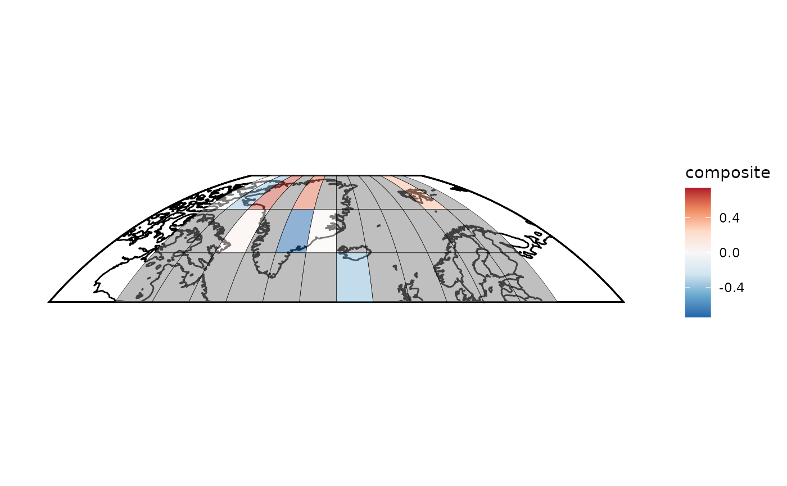

Gridded_composites
Gridded_composites.Rmd
library(compositeR)
library(lipdR)
library(geoChronR)
#> Welcome to geoChronR version 1.1.17!
#>
#> Attaching package: 'geoChronR'
#> The following objects are masked from 'package:lipdR':
#>
#> createTSid, pullTsVariable
#> The following object is masked from 'package:compositeR':
#>
#> simulateAutoCorrelatedUncertainty
library(ggplot2)
library(dplyr)
#>
#> Attaching package: 'dplyr'
#> The following objects are masked from 'package:stats':
#>
#> filter, lag
#> The following objects are masked from 'package:base':
#>
#> intersect, setdiff, setequal, union
library(tidyr)
library(purrr)
FD <- lipdR::readLipd("http://lipdverse.org/geoChronR-examples/arc2k/Arctic2k.zip")
#> [1] "Loading 19 datasets from /tmp/RtmpgN028m/lpdDownload..."
#> [1] "reading: Arc-Agassiz.Vinther.2008.lpd"
#> [1] "reading: Arc-Austfonna.Isaksson.2005.lpd"
#> [1] "reading: Arc-CampCentury.Fisher.1969.lpd"
#> [1] "reading: Arc-Crete.Vinther.2010.lpd"
#> [1] "reading: Arc-DevonIceCap.Fisher.1983.lpd"
#> [1] "reading: Arc-Dye.Vinther.2010.lpd"
#> [1] "reading: Arc-GISP2.Grootes.1997.lpd"
#> [1] "reading: Arc-GRIP.Vinther.2010.lpd"
#> [1] "reading: Arc-Hvtrvatn.Larsen.2011.lpd"
#> [1] "reading: Arc-LakeC2.Lamoureux.1996.lpd"
#> [1] "reading: Arc-LakeDonardBaffinIsland.Moore.2001.lpd"
#> [1] "reading: Arc-LakeLehmilampi.Haltia-Hovi.2007.lpd"
#> [1] "reading: Arc-LakeNataujrvi.Ojala.2005.lpd"
#> [1] "reading: Arc-LowerMurrayLake.Cook.2008.lpd"
#> [1] "reading: Arc-NGRIP1.Vinther.2006.lpd"
#> [1] "reading: Arc-NGTB16.Schwager.1998.lpd"
#> [1] "reading: Arc-NGTB18.Schwager.1998.lpd"
#> [1] "reading: Arc-NGTB21.Schwager.1998.lpd"
#> [1] "reading: Arc-Renland.Vinther.2008.lpd"
#>
#>
#> [1] "Successfully loaded 19 datasets, with 0 failure(s)."
FDts <- as.lipdTsTibble(FD)Create a grid
# Define the boundaries of your grid
min_lat <- 60
max_lat <- 80
min_lon <- -80
max_lon <- 30
# Define the resolution of your grid (in degrees)
resolution <- 10
# Create sequences for latitude and longitude
lats <- seq(min_lat, max_lat, by = resolution)
lons <- seq(min_lon, max_lon, by = resolution)
# Get the lat/lon edges too
latEdges <- seq(min_lat - resolution/2, max_lat + resolution/2, by = resolution)
lonEdges <- seq(min_lon - resolution/2, max_lon + resolution/2, by = resolution)
# Create a grid from these sequences
grid <- expand.grid(lon = lons,lat = lats)
# View the first few rows of the grid
head(grid)
#> lon lat
#> 1 -80 60
#> 2 -70 60
#> 3 -60 60
#> 4 -50 60
#> 5 -40 60
#> 6 -30 60
# Plot the grid on a map
sites <- mapLipd(FD,size = 3) +
geom_hline(yintercept = latEdges, color = "grey80") +
geom_vline(xintercept = lonEdges, color = "grey80") +
geom_point(data = grid, aes(x = lon, y = lat),color = "blue")
sites note that the grid df is grid centers, while the edges are the boundaries of each gridcell
Find the nearest grid point for each dataset
#calculate all the distances between the datasets and each grid cell
allDistances <- map2(FDts$geo_longitude,FDts$geo_latitude,\(x,y) geosphere::distHaversine(c(x,y),as.matrix(grid)))
#find the minimum, and add into the tibble
FDts$cell <- map_dbl(allDistances,which.min)
#make another map to show the number of datasets in each cell
nPerCell <- FDts |>
select(dataSetName,cell) |>
distinct() |>
group_by(cell) |>
summarize(count = n())
grid$count <- 0 #initialize with zero
grid$count[nPerCell$cell] <- nPerCell$count
baseMap(grid$lon,grid$lat) +
geom_tile(data = grid,aes(x = lon, y = lat, fill = count),alpha = .5,color = "black") +
geom_point(data = FDts,aes(x = geo_longitude, y = geo_latitude),colour = "blue",size = 3) +
scale_fill_viridis_b(right = FALSE)
Now, to actually composite these data
Let’s filter the timeseries data down to one value per site.
toComp <- FDts |>
filter(interpretation1_variable == "T") #select only temperature sensitive timeseries
#now let's use compositeR to create a function that will composite 2 or more datasets within a cell
ourCompositer <- function(cellnum,toComp,binvec){
thisTS <- filter(toComp,cell == cellnum)
if(nrow(thisTS) == 0){
ensOut <- list(ages = rowMeans(cbind(binvec[-1],binvec[-length(binvec)])))
ensOut$composite <- ensOut$proxyVals <- ensOut$proxyUsed <- matrix(NA, nrow = length(ensOut$ages))
return(ensOut)
}else{
tc <- as.lipdTs(thisTS) |> splitInterpretationByScope()
ensOut <- compositeEnsembles2(tc,
binvec=binvec,
ageVar = "year",
binFun=sampleEnsembleThenBinTs,
stanFun=standardizeOverRandomInterval,
normalizeVariance=TRUE,
gaussianizeInput = TRUE,
nens=100,
duration = 200,
searchRange=c(1200,2000),
minN=5,
scale = TRUE #scale composite to mean = 0, sd = 1 after compositing
)
return(ensOut)
}
}
grid$cell <- seq_along(grid$lat) #number the grid cells
allComps <- map(grid$cell,.f = ourCompositer,toComp = toComp,binvec = seq(0,2000,by = 10))
grid$composites <- allComps
extractMedians <- function(x){
if(ncol(x$composite) == 1){
return(tibble(year = x$ages,composite = x$composite))
}else{
return(tibble(year = x$ages,composite = apply(x$composite,1,median, na.rm = TRUE)))
}
}
#pull the medians out of the ensembles
grid$compMedians <- map(allComps,extractMedians)
grid$compMat <- map(allComps,\(x) x$composite)Now let’s calculate some spatially weighted composites
toCombine <- filter(grid,map_lgl(compMat,\(x) !(all(is.na(x)))))
toCombine$weights <- pracma::cosd(toCombine$lat)
toCombine$weights <- toCombine$weights / sum(toCombine$weights)
toCombine$weightedMat <- map2(toCombine$compMat,toCombine$weights,\(x,y) x*y)
weightedArray <- array(unlist(toCombine$weightedMat),dim = c(nrow(toCombine$weightedMat[[1]]),ncol(toCombine$weightedMat[[1]]),length(toCombine)))
meanArray <- apply(weightedArray,c(1,2),sum,na.rm = TRUE)
plotTimeseriesEnsRibbons(X = toCombine$composites[[1]]$ages,Y = meanArray) +
scale_x_continuous(breaks = seq(0,2000,by = 100)) +
labs(x = "Year AD", y = "Area weighted composite",title = "Area Weighted Composite")
Make some maps of the composites!
#tidy up the data frame for mapping
spatialMedians <- grid |>
select(-composites) |>
unnest(compMedians)
#Pick a year to map:
toMap <- filter(spatialMedians,year == 1905)
baseMap(toMap$lon,toMap$lat,f = .2) +
geom_tile(data = toMap,aes(x = lon, y = lat, fill = composite),alpha = .5,color = "black") +
scale_fill_distiller(palette = "RdBu",limit = max(abs(toMap$composite),na.rm = TRUE) * c(-1, 1))
Now can we animate it?
library(gganimate)
library(gifski)
anim <- baseMap(spatialMedians$lon, lat = spatialMedians$lat, f = .2) +
geom_tile(data = spatialMedians, aes(x = lon, y = lat, fill = composite), alpha = .5, color = "black") +
scale_fill_distiller(palette = "RdBu", limit = max(abs(spatialMedians$composite), na.rm = TRUE) * c(-1, 1)) +
labs(title = 'Year: {round(frame_time)}') +
transition_time(year)
#create an animation and save it
fps <- 10
animate(anim, fps = fps, duration = length(unique(spatialMedians$year))/fps, width = 800, height = 600,dpi = 150, renderer = gifski_renderer("../preview.gif"))